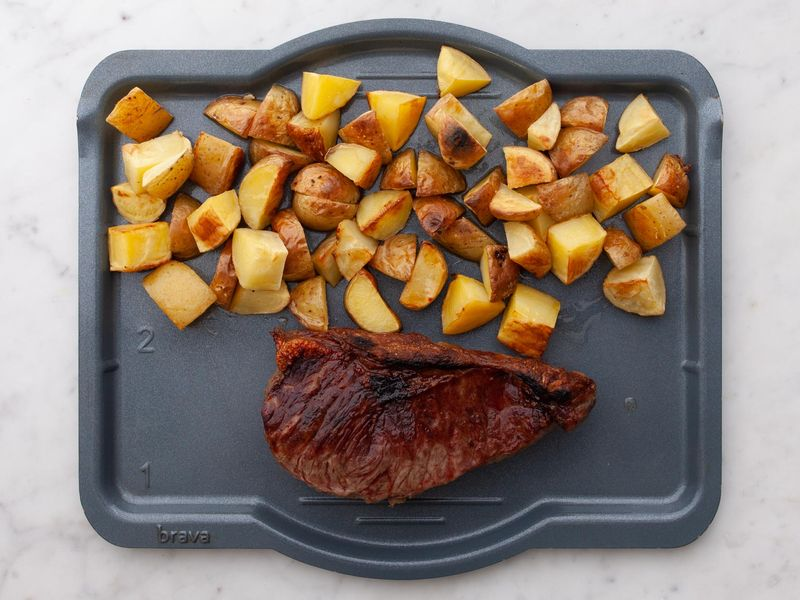

Steak and Potatoes

Description
This is a Macro-Friendly plate of Steak and Potatoes with Vegetables! I like to add Ketchup for simplicity but if you're not worried about the calories you can add any sauce/garnish you like! Low in fat and high in Protein this makes the perfect recipe for anyone looking to reduce calories and hit the gym!
Ingredients
- 250g Raw Sirloin Steak
- 300-500g Raw Potato, Diced
- 10g Olive Oil
- Salt & Pepper
Method
- Pre-heat the Oven to 220C.
- Dice the Potato in to half-inch cubes and season with Salt and Pepper.
- Let Potato bake in the oven for 45 minutes or until golden brown.
- Pre-heat a cast iron pan until smoking hot on high heat.
- Season the steak and lather it in 10g of Olive Oil.
- Place steak in pan, laying away from you to avoid splatter.
- After 3 minutes, flip and wait another 3 minutes.
- Ensure internal temp. is 115-145F (lower if you like rare, higher if you like your steak more well-done.)
- Let the steak rest for 5 minutes, slice it if desired.